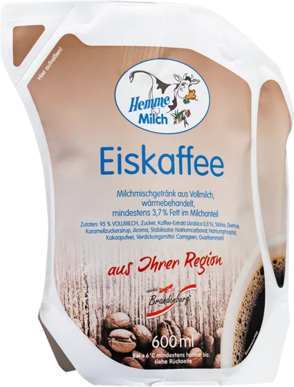
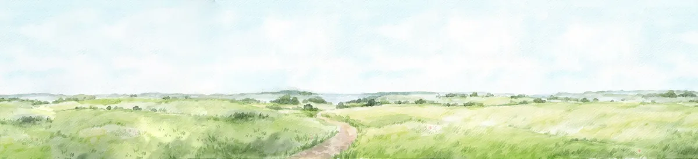
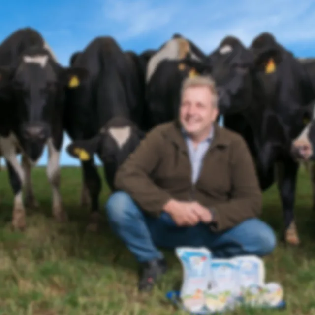

Willkommen zurück
Alles für die Marke. An einem Ort.
- Dateien
- 0
- Bereiche
- 6
- Warten auf Freigabe
- 0

Warten auf eure Freigabe
Gestalten, intern abstimmen, Markenfreigabe, veröffentlichen: genau wie im Brandbook.
Bereiche
Alle Dateien
Nichts gefunden. Probiert ein anderes Wort oder setzt die Filter zurück.
Logos richtig einsetzen
Aus dem Brandbook 2026. Bitte immer die Originaldateien nutzen und nie nachbauen.

So ist es richtig
- Schutzzone rund ums Logo mindestens so breit wie das „M“ von Milch
- Mindestbreite digital 120 Pixel, im Druck 25 Millimeter
- Auf Fotos nur die weiße Wortmarke, auf ruhigen Flächen
Bitte nicht
- Logo verzerren, drehen oder neu einfärben
- Schatten, Konturen oder Effekte ergänzen
- Kuh und Schriftzug voneinander trennen
Schutzzone und Mindestgrößen sind Vorschläge von NEXAS und werden mit dem Brandbook abgeglichen.
Styleguide
Farben, Schriften und Elemente aus dem Brandbook 2026. Ein Klick auf eine Farbe kopiert den Farbcode.
Markenfarben
- TiefblauVerlauf außen, Schrift auf Hell, Logo-Umfeld
- Hemme-BlauVerlauf Mitte
- BlauPantone 300C · Flächen mit weißer Schrift (5,2 : 1)
- GrünPantone 368C · Akzente, nie mit weißer Schrift
- GelbPantone 137C · Knöpfe und Hinweise, Schrift Tiefblau
- VerlaufHintergrund aus dem Brandbook
Das Brandbook nennt für Blau, Grün und Gelb die Bildschirmwerte #008FFF, #6EFF00 und #FFA611. Die sind sehr grell und erreichen mit weißer Schrift den nötigen Kontrast nicht. Für Website und Social Media gelten deshalb die Werte oben, abgestimmt auf die Pantone-Farben aus dem Druck.
Kategoriefarben
Vorschlag NEXAS · Freigabe offenJede Produktgruppe hat eine Kennfarbe. Sie markiert die Kategorie auf Website, Social Media und Print, immer an derselben Stelle und immer klein. Die Fläche bleibt Blau.
- Frischmilch#006EC6 · Schrift: Weiß
- Joghurt#D6336C · Schrift: Weiß
- Milchgetränke#8A5A3C · Schrift: Weiß
- Butter & Buttermilch#F7A30A · Schrift: Tiefblau
- Quark#61BF1A · Schrift: Tiefblau
- Pudding & Porridge#8E5BD0 · Schrift: Weiß
So einsetzen
- Als Streifen oben links, als Punkt oder als Etikett mit dem Kategorienamen
- Immer zusammen mit dem Produkt oder dem Kategorienamen
- Schrift auf der Kennfarbe: Weiß, bei Butter und Quark Tiefblau
Bitte nicht
- Als große Hintergrundfläche, dafür ist der Hemme-Verlauf
- Als Schriftfarbe für Fließtext
- Zwei Kategoriefarben gleich stark in einem Motiv
So sieht das auf Social Media aus
Beerenfest
Fassbutter

Eiskaffee
April bis September
Beispiele mit echten Packshots. Website und digitale Anwendungen sind laut Brandbook freigabepflichtig durch die Markenverantwortliche.
Schriften
Beide Schriften liegen nur als Desktop-Lizenz vor. Für Website und Web-Anwendungen braucht Hemme Web-Lizenzen bei Linotype und MyFonts.
So sprechen wir
- Direkt und im Plural: „ihr“ und „euch“, wie in „Eure Familie Hemme“ und „Kommt vorbei!“
- Slogan: „Frisch vom Hof · Eure Familie Hemme“, mit Herz oder mit Uckermark-Label, nur als Bilddatei
- Werte: Regionalität, Transparenz, Verantwortung, Mit Sorgfalt, Mit Herz geführt, Genuss
Designelemente
- HerzAls großes Hintergrundelement, leicht transparent
- SiegelEigenes Futter · Eigene Kühe · Eigene Molkerei

- Beutel-IconsLinien-Icons für die Vorteile des Milchbeutels
- Aquarell-WieseAls Abschluss unten, läuft weich in den Verlauf aus

Für Redaktionen · ohne Login
Pressebereich
Pressefotos in Druckqualität, das aktuelle Fact Sheet und eine feste Ansprechperson. Jeder Download bringt den Bildnachweis mit.

Pressekontakt
Name und E-Mail folgen
- Neue Geschäftsführung und neue Attraktionen auf dem HofMärkische Oderzeitung
- Regionalmarkt am 3. Oktober auf dem Hemme-HofPressemitteilung
- Neu auf dem Hof: das MaislabyrinthPressemitteilung